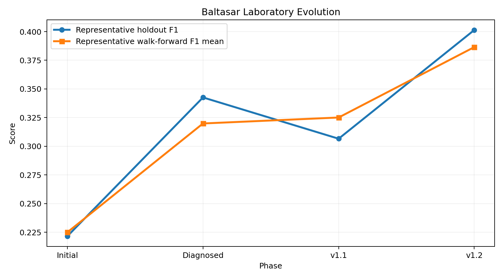
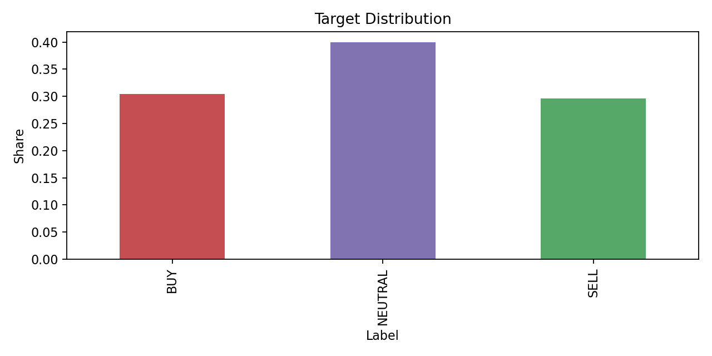
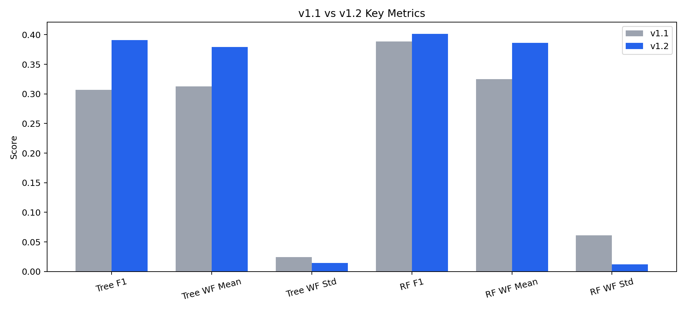
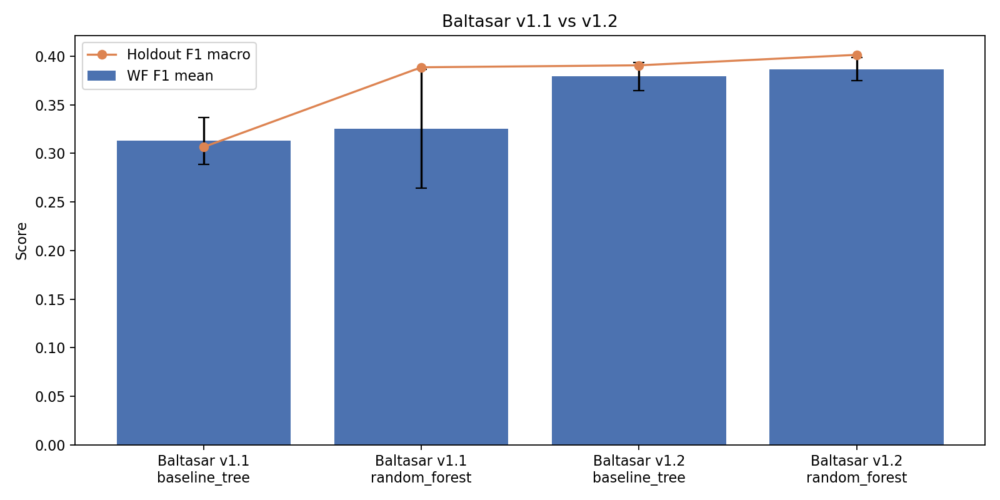
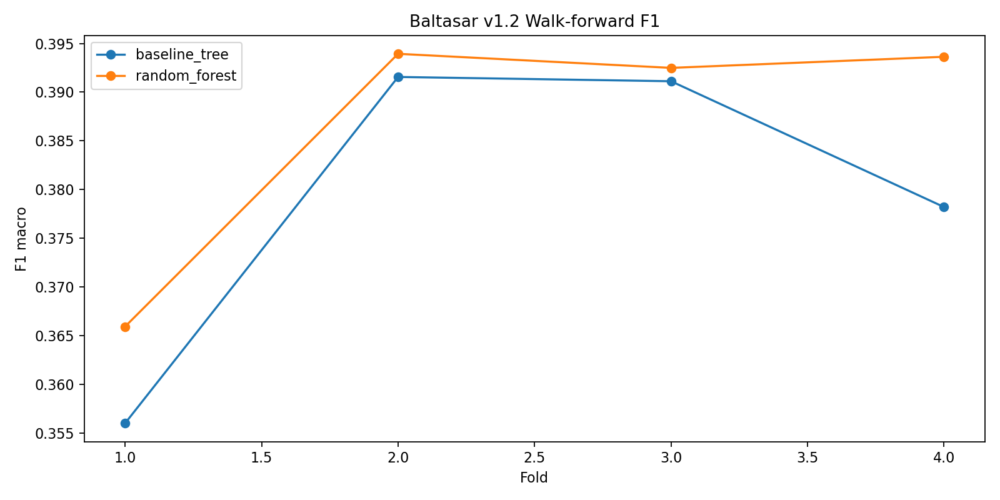
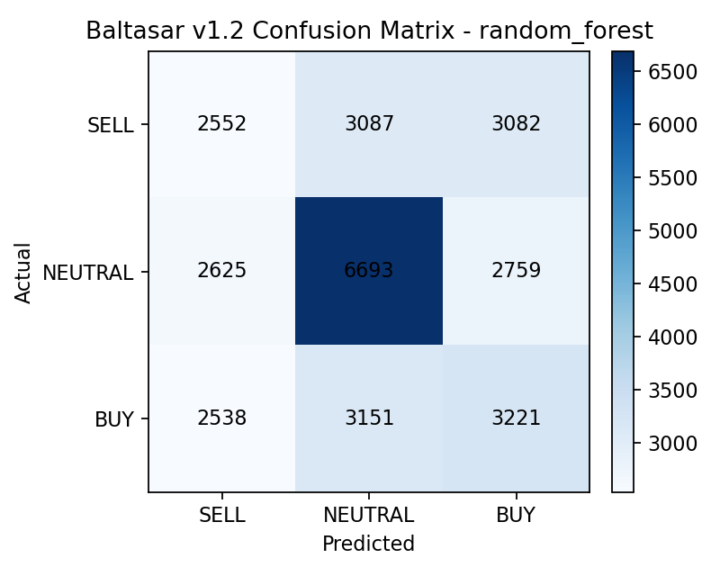
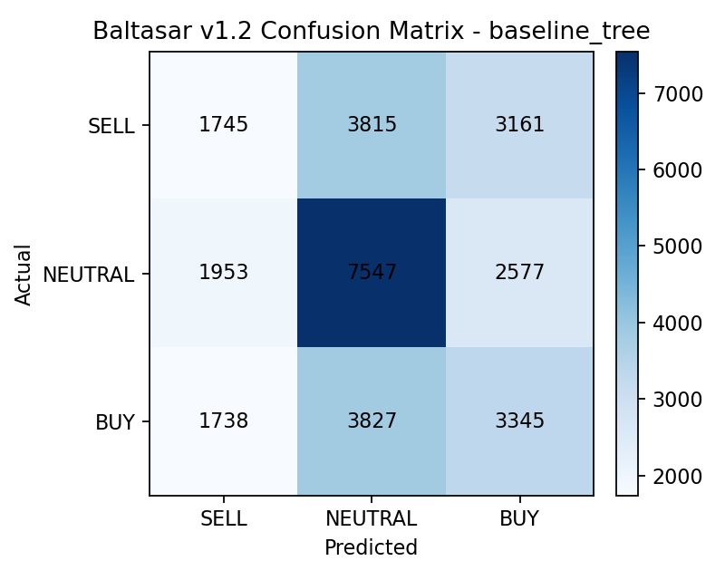

Este documento resume en lenguaje claro que se construyo, que se descubrio, que cambio y por que Baltasar v1.2 quedo promovido como la nueva base oficial del laboratorio.
Baltasar v1.2 es una mejora real sobre v1.1. La nueva configuracion no solo eleva la senal, sino que tambien reduce la dispersion temporal. Esa combinacion es la razon por la que `random_forest` ahora si puede ser promovido como baseline oficial.

Antes de la nueva consolidacion, el laboratorio ya habia avanzado, pero todavia habia una tension entre rendimiento puntual y estabilidad temporal. La muestra inicial permitia aprender, pero no era suficiente para validar una promocion mas agresiva del baseline.
La fase de diagnostico mostro que gran parte del problema estaba en la definicion del target: demasiado peso de `NEUTRAL`, sensibilidad a thresholds y horizonte, e inestabilidad al cambiar de tramo temporal.
`h18_t05` fue una mejora correcta para v1.1, pero `h12_t03` mostro mejor consistencia cruzando dos modelos y luego sobre el dataset extendido. En pocas palabras: no solo se ve mejor, tambien resiste mejor.

La decision de negocio no podia apoyarse solo en una muestra corta. Por eso v1.2 se validó sobre un dataset extendido de casi 24 meses, desde 2024-04-15 00:00:00+00:00 hasta 2026-04-14 23:50:00+00:00.
| Dato | Valor |
|---|---|
| Run del dataset | run_2024-04-15_00-00-00 |
| Filas brutas | 148,551 |
| Columnas | 35 |
| CSV diarios | 520 |
| Aprox. meses | 23.95 |
La muestra extendida permite medir mejor robustez entre regimenes de mercado y reduce el riesgo de sobreajustar conclusiones a una ventana corta.


En v1.1, el bosque aleatorio parecia mejor en una foto, pero no lo suficiente en estabilidad. En v1.2 esa objecion desaparece: ahora mejora simultaneamente `F1 macro`, `walk-forward mean` y `walk-forward std`.
| Modelo | F1 macro | Accuracy | WF mean | WF std |
|---|---|---|---|---|
| random_forest | 0.4014 | 0.4196 | 0.3865 | 0.0119 |
| baseline_tree | 0.3906 | 0.4254 | 0.3792 | 0.0144 |

El arbol sigue siendo clave para auditoria, explicacion interna y lectura de comportamiento por clase. No pierde valor por dejar de ser baseline oficial; cambia su funcion dentro del gobierno del laboratorio.


Adoptar Baltasar v1.2 como nueva base oficial del laboratorio MAGI. Usar `random_forest` como baseline tecnico de referencia para comparaciones futuras y mantener `baseline_tree` como modelo explicable para auditoria y comunicacion.
La siguiente fase recomendada no es cambiar de modelo, sino mejorar calibracion, robustez operacional y definicion de etiqueta de negocio.